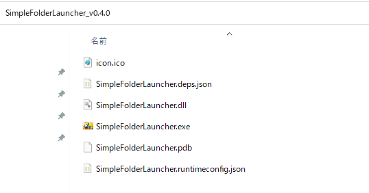
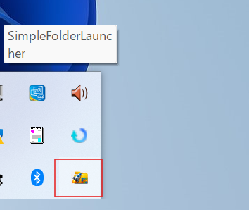
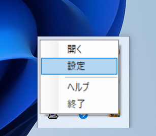
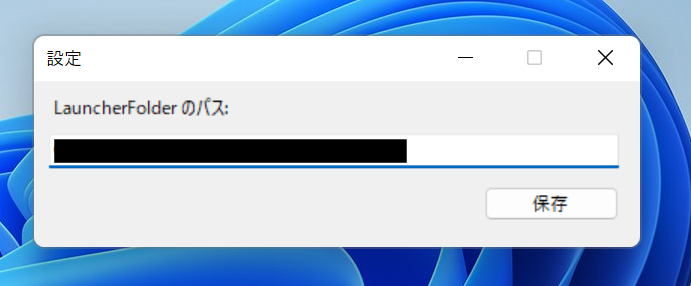
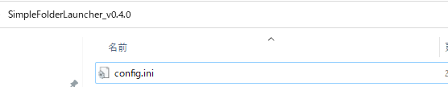

使い方 / Documentation
クイックスタート
2. 任意の場所に解凍
任意の場所にダウンロードしたzipファイルを解凍してください。 このフォルダがランチャーのルートになります。
3. exe 実行
SimpleFolderLauncher.exe を実行するとタスクトレイに常駐します。
4. パスの設定
常駐しているアプリを右クリックし、設定をクリックします。 すると、パスの設定画面が表示されるので任意のパスを設定してください。 保存すると次回からそのパスがランチャー画面で表示されます。(config.iniが作られ、設定が保存されます。)
  5. 設定後起動方法
Shift 2回連続 もしくは Ctrl + Shift + i で起動できます。
またはタスクトレイから開くをクリックでも表示できます。
操作方法1
- 表示されている0～9、A～Zのショートカットで即起動
操作方法2
- ↑ ↓：項目移動
- Enter：実行
キーワード検索
- キーワード検索で、絞り込むことができます。
その他の機能
- 右クリックすることでパスのコピーができます。
- escキーでランチャー画面を閉じることができます。
アプリ更新方法
更新時は新しいバージョンをダウンロードして既存フォルダに上書きしてください。
アップデート方法
- 1. SimpleFolderLauncherを終了する
- 2. 新しいzipファイルをダウンロード
- 3. 既存フォルダに上書きする
- 4. 起動する
その他
- スタートアップに登録しておくと自動で起動して常駐するので起動忘れの心配がないので設定をお勧めします。
- 外部キーボードを使用している場合にテンキー入力する場合は、NumLockをONにしてください。